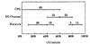
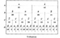
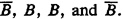
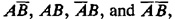
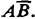
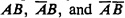
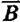

){kind=link}
){kind=link}
 .
.
| Previous | Table of Contents | Next |
This completes the discussion on general graphic charts. Next the charts designed specifically for performance analysts are discussed.
In data processing installations, computer performance evaluation (CPE) managers are often interested in ensuring that all resources of a system are utilized optimally. Any resource whose utilization is too high is a bottleneck and may degrade the performance. Similarly, a resource with very low utilization represents inefficiency in the system. For appropriate utilization of all resources, it is necessary that the workload represent a mix of jobs using different resources and that there be significant overlap in the use of resources. The overlap among resources can be shown by utilization profiles in a Gantt chart.
In general, a Gantt chart can be used to show the relative duration of any number of Boolean conditions—conditions that are either true or false. A resource being used or being idle is an example of a Boolean condition. Each condition is shown to be a set of horizontal line segments. The total length of the line segments represents the relative duration of the condition. The position of various segments is arranged such that the overlap between different lines represents the overlap between the conditions.
A sample Gantt chart is shown in Figure 10.14. The utilizations of three resources, CPU, I/O channel, and network link, are shown. The CPU utilization is 60%. The I/O channel utilization is 40%. The overlap between the CPU and I/O channel is 20%. The network link utilization is 60% and is shown in four segments that add to 60%. The relative sizes and positions of the four segments are arranged so that the relative overlap among various devices can be read directly. During 30% of the time, the CPU and network but not the I/O channel are used. During 10% of the time all three resources are used. For 5% of the time, I/O and network are used but the CPU is idle. Network alone is used for 15% of the time.

FIGURE 10.14 Sample Gantt chart.
| TABLE 10.1 Data for Gantt Chart of Example 10.1 | ||||
|---|---|---|---|---|
| A | B | C | D | Time Used (%) |
| 0 | 0 | 0 | 0 | 5 |
| 0 | 0 | 0 | 1 | 5 |
| 0 | 0 | 1 | 0 | 0 |
| 0 | 0 | 1 | 1 | 5 |
| 0 | 1 | 0 | 0 | 10 |
| 0 | 1 | 0 | 1 | 5 |
| 0 | 1 | 1 | 0 | 10 |
| 0 | 1 | 1 | 1 | 5 |
| 1 | 0 | 0 | 0 | 10 |
| 1 | 0 | 0 | 1 | 5 |
| 1 | 0 | 1 | 0 | 0 |
| 1 | 0 | 1 | 1 | 5 |
| 1 | 1 | 0 | 0 | 10 |
| 1 | 1 | 0 | 1 | 10 |
| 1 | 1 | 1 | 0 | 5 |
| 1 | 1 | 1 | 1 | 10 100 |
The following example illustrates the procedure to develop a Gantt chart from raw data.
.

FIGURE 10.15 Draft of the Gantt chart.
At the next level each of the two parts is subdivided into two parts, and the four parts so obtained are marked . These four parts correspond to  respectively.
The sum of four entries with A = 1 and B = 0 is 20%. This is the length of the division corresponding to . Similarly, the length of the divisions corresponding to  is 35, 30, and 15, respectively. The lengths are written under the labels.
The dotted vertical lines showing the four divisions of this level are continued down to all subsequent levels. It must be pointed out that the order , B, B, and is chosen to keep the two solid line segments corresponding to B = 1 together, thereby minimizing the number of segments.
| Previous | Table of Contents | Next |
){kind=link}
){kind=link}